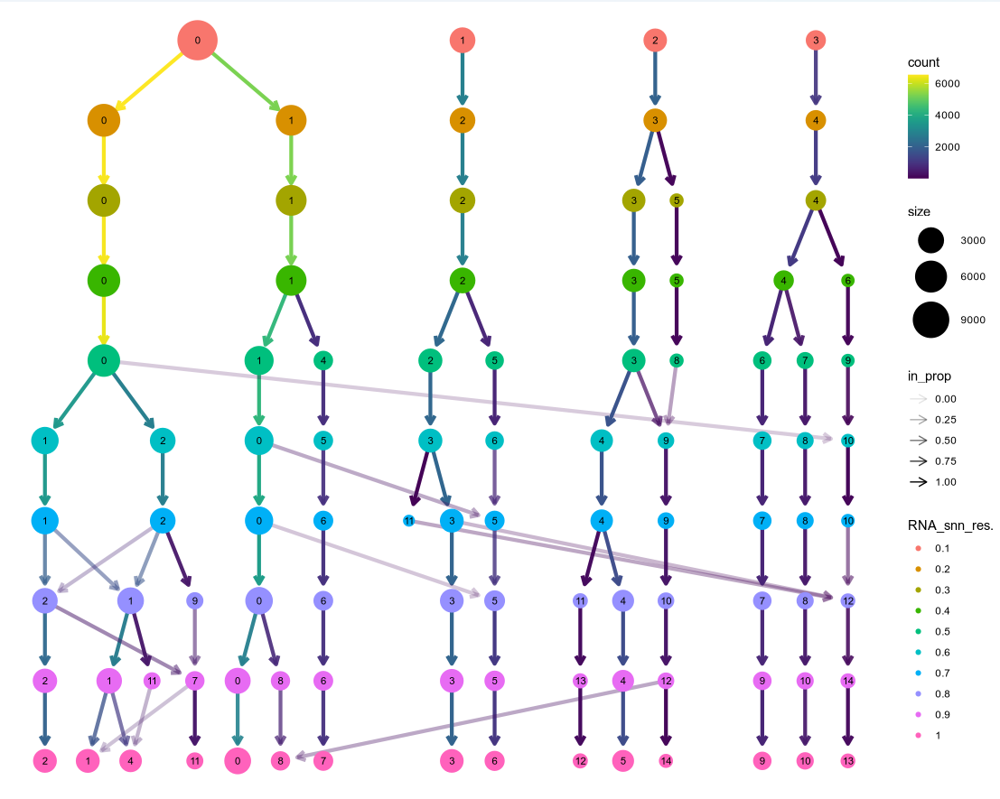

本篇主要介绍针对挑选合适的分辨率(resolution)进行聚类以及不同的cluster提取特征基因后，如何对基因进行重新命名。
在完成了sccancer的所有分析后，在combine(如果没有合并那么就是在ScAnno文件夹中)的目录中生产一个RDS文件，sccancer的聚类的resolution默认是0.8。
一、clustree 选定聚类分辨率
这个工具可以根据不同resolution的设置的聚类结果绘制聚类树
library(Seurat)
library(clustree)
data <- readRDS("/path/to/your/expr.RDS")
data <- FindClusters(
object = data,
resolution = c(seq(0.1,1,0.1))
)
clustree(data@meta.data, prefix = "RNA_snn_res.")

可以在图中看到不同的resolution，分群的变化情况。以此来确定适合的resolution。resolution>0.7后cluster变化意义就不是很大。分多少群其实现在也不是就根据resolution就定死了，
提取每个cluster的特征基因判断细胞类群才是最终的结果
cluster聚类只是为了更好的分细胞类型。
二、重新聚类，并提取cluster特征基因
我们定好了resolution(比如说0.8)，先载入R包读取数据文件,然配置一个颜色集，也可以直接使用ggsci中的颜色集。
library(Seurat)
library(ggplot2)
library(dplyr)
library(patchwork)
library(SingleR)
library(showtext)
library(reshape2)
library(openxlsx)
library(loupeR)
data <- readRDS("/path/to/your/expr.RDS")
res <- 0.8
colors_dutch <- c(
'#FFC312', '#C4E538', '#12CBC4', '#FDA7DF',
'#ED4C67', '#F79F1F', '#A3CB38', '#1289A7',
'#D980FA', '#B53471', '#EE5A24', '#009432',
'#0652DD', '#9980FA', '#833471', '#EA2027',
'#006266', '#1B1464', '#5758BB', '#6F1E51',
'#40407a', '#706fd3', '#f7f1e3', '#34ace0',
'#33d9b2', '#2c2c54', '#474787', '#aaa69d',
'#227093', '#218c74', '#ff5252', '#ff793f',
'#d1ccc0', '#ffb142', '#ffda79', '#b33939',
'#cd6133', '#84817a', '#cc8e35', '#ccae62',
'#E64B35', '#4DBBD5', '#00A087', '#3C5488',
'#F39B7F', '#8491B4', '#91D1C2', '#DC0000',
'#7E6148', '#B09C85'
)
可能还需要重新输入具体的样本名称或者分组。
group_id <- c("sample1" = "group1",
"sample2" = "group1",
"sample3" = "group1",
"sample4" = "group2",
"sample5" = "group2",
"sample6" = "group2")
Idents(data) <- data$sample.ident
data <- RenameIdents(data, group_id)
data$groupName <- Idents(data)
重新降维聚类，并提取每个cluster的特征基因。
scale.genes <- rownames(data)
data <- RunPCA(data, features = VariableFeatures(data))
p <- ElbowPlot(data, ndims = 20, reduction = "pca")
ggsave("pca_elbow.pdf")
ggsave("pca_elbow.png")
pc.num = 1:30
##细胞聚类
data <- FindNeighbors(data, dims = pc.num)
data <- FindClusters(data, resolution = res)
table(data@meta.data$seurat_clusters)
##非线性降维
#tSNE
data <- RunTSNE(data, dims = pc.num)
embed_tsne <- Embeddings(data, 'tsne')
write.csv(embed_tsne, 'embed_tsne.csv')
#UMAP
data <- RunUMAP(data, dims = pc.num)
embed_umap <- Embeddings(data, 'umap')
write.csv(embed_umap, 'embed_umap.csv')
##特征基因
diff.wilcox <- FindAllMarkers(data, only.pos = TRUE)
write.csv(diff.wilcox, "all_marker.csv", row.names = FALSE, quote = FALSE)
绘制umap，tsne图，这里根据需求分别绘制总的图(umap,tsne)，和按照group分的图(umap,tsne)。
## plot
p <-
DimPlot(data,
split.by = "groupName",
label = T,
pt.size = 1.5) + scale_color_manual(values = colors_dutch) + theme(panel.spacing = unit(0.6, "cm", data = NULL))
showtext_auto()
ggsave(
plot = p,
filename = "umap_group.pdf",
width = 16,
height = 7
)
showtext_auto(FALSE)
ggsave(
plot = p,
filename = "umap_group.png",
width = 16,
height = 7,
type = "cairo-png"
)
p <-
DimPlot(data, label = T, pt.size = 2) + scale_color_manual(values = colors_dutch) + theme(panel.spacing = unit(0.6, "cm", data = NULL))
ggsave(
plot = p,
filename = "umap_all.pdf",
width = 9,
height = 7
)
showtext_auto(FALSE)
ggsave(
plot = p,
filename = "umap_all.png",
width = 9,
height = 7,
type = "cairo-png"
)
p <-
DimPlot(data,
reduction = "tsne",
label = T,
pt.size = 2) + scale_color_manual(values = colors_dutch) + theme(panel.spacing = unit(0.6, "cm", data = NULL))
showtext_auto()
ggsave(
plot = p,
filename = "tSNE_all.pdf",
width = 9,
height = 7
)
showtext_auto(FALSE)
ggsave(
plot = p,
filename = "tSNE_all.png",
width = 9,
height = 7,
type = "cairo-png"
)
q <-
DimPlot(
data,
reduction = "tsne",
split.by = "groupName",
label = T,
pt.size = 2
) + scale_color_manual(values = colors_dutch) + theme(panel.spacing = unit(0.6, "cm", data = NULL))
showtext_auto()
ggsave(
plot = q,
filename = "tSNE_group.pdf",
width = 37,
height = 7
)
showtext_auto(FALSE)
ggsave(
plot = q,
filename = "tSNE_group.png",
width = 37,
height = 7,
type = "cairo-png"
)
保存RDS，并使用loupeR生成loupe文件
saveRDS(subset_t,paste0("res-",res,".RDS"))
create_loupe_from_seurat(subset_t,executable_path ="/path/to/louper-linux-x64" )
以上就完成了初步的聚类，实际在使用sccancer进行分析时已经按照0.8进行cluster。这里其实不需要重新聚类。res=0.8其实还挺科学的，适用于大部分的场景。loupeR的使用以及输出文件，可以参考loupeR。
三、细胞类型判定
细胞类型判定可以使用singleR包进行，也可以根据生物学知识进行判定。比如我们在上一步聚类是总共有0~14,15个cluster，但是根据生物学知识，我们知道cluster10是血小板细胞，cluster6是红细胞。理论情况下不应该出现这些细胞类型。那么我们可能就需要现将这些细胞去除掉。
3.1 去除不应该出现的细胞类
还是使用Seurat就可以
library(Seurat)
data <- readRDS("/path/to/your/res-0.8.RDS")
scdata <- subset(data, idents=c("10","6"),invert = TRUE)
3.2 单细胞类型判定合并
剩余的cluster被判定为了6个细胞类型(I,II,III,IV,V,VI)
new.cluster.ids <- c("0"="I","11"="I","1"="II","4"="II","2"="III","9"="III","3"="IV","5"="IV","7"="V","8" = "V","14" = "V","12"="VI","13"="VI")
scdata <- RenameIdents(scdata, new.cluster.ids)
scdata$celltype <- Idents(scdata)
## 统计每个细胞类型的细胞数量和百分比
library(reshape2)
library(openxlsx)
cell_count <- table(Idents(scdata),scdata$sample.ident)
df <- dcast(as.data.frame(cell_count), Var1 ~ Var2)
colnames(df)[1] <- "celltype"
df_transformed <- df
df_transformed[, -1] <- lapply(df[, -1], function(x) x / sum(x))
wb <- createWorkbook()
addWorksheet(wb, "count")
writeData(wb, "count", cell_count, colNames = TRUE, rowNames = FALSE)
addWorksheet(wb, "pct")
writeData(wb, "pct", df_transformed, colNames = TRUE, rowNames = FALSE)
saveWorkbook(wb, "cell_count.xlsx", overwrite = TRUE)
saveRDS(scdata,"rename.RDS")
create_loupe_from_seurat(subset_t,output_name="rename",executable_path ="/path/to/louper-linux-x64" )
3.3 基于细胞数量统计绘制箱线图
细胞数量也是一个很重要的指标。
library(openxlsx)
library(reshape2)
library(dplyr)
data <- read.xlsx("cell_count.xlsx",sheet = "pct",rowNames = TRUE)
grp <- data.frame(sample = colnames(data),group=c("Group1","Group1","Group1","Group2","Group2","Group2")) ## 对应分组
data$celltype <- rownames(data)
data_l <- melt(data,id.vars="celltype")
colnames(data_l) <- c("celltype","sample","pct")
draw_data <- left_join(data_l,grp,by = "sample")
combinations <- combn(levels(as.factor(draw_data$group)),2,simplify = F)
combination_list <- lapply(combinations, function(pair) {
c(pair[1], pair[2])
})
cells <- rownames(data)
for (i in cells) {
df <- draw_data[which(draw_data$celltype== i),]
df$pct <- df$pct * 100
p <- ggplot(df, aes(x = group,y = pct, color = group)) +
geom_boxplot(outlier.shape = NA,lwd = 2) + geom_point(size = 6) + stat_boxplot(geom = "errorbar",size = 2) +
labs(x = "", y = "Cell_percet/%",
title = i) +
theme_bw() +
theme(legend.position = "none",
plot.title = element_text(size = 20,hjust = 0.5),
axis.text = element_text(size = 12),
axis.title.y = element_text(size = 14),
panel.grid =element_blank(),panel.border=element_rect(linewidth =1.5)) +
stat_compare_means(comparisons = combination_list, method = "t.test",label = "p.signif") +
scale_color_aaas() + scale_fill_aaas(alpha = 0.6)
## 可能还有特殊符号
# if (i == "γδT/ILC") {
# i <- "ILC"
# }
ggsave(p,filename=paste0("boxplot/", i, ".png"),width = 6, height = 8, type = "cairo-png")
ggsave(p,filename=paste0("boxplot/", i, ".pdf"),width = 6, height = 8)
}
## 其他的一些展现形式
q <- ggboxplot(
df,
x = "group",
y = "pct",
color = "group",
add = "jitter",
legend = 'none',lwd=2,linewidth = 2
) + stat_compare_means(comparisons = combination_list, method = "t.test",label = "p.signif") + scale_color_aaas() + scale_fill_aaas(alpha = 0.6)
p <- ggplot(df, aes(x = group,y = pct, color = group)) +
geom_boxplot(outlier.shape = NA,lwd = 2) + geom_point(size = 6) + stat_boxplot(geom = "errorbar",size = 2) +
labs(x = "", y = "Cell_percet/%",
title = i) +
theme_bw() +
theme(legend.position = "none",
plot.title = element_text(size = 20,hjust = 0.5),
axis.text = element_text(size = 12),
axis.title.y = element_text(size = 14),
panel.grid =element_blank(),panel.border=element_rect(linewidth =1.5)) +
stat_compare_means(comparisons = combination_list, method = "t.test",label = "p.signif") +
scale_color_aaas() + scale_fill_aaas(alpha = 0.6)
关于细胞类型的判定重命名就到这里就结束了。